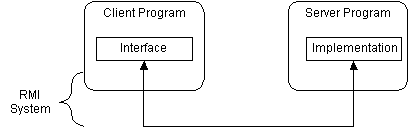
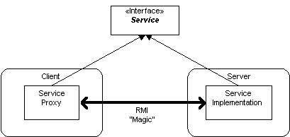
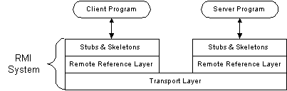
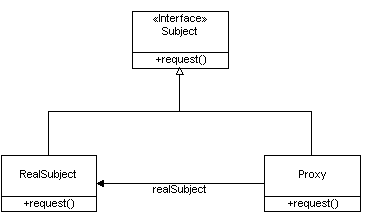
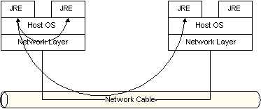
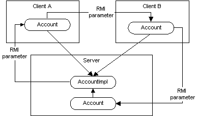
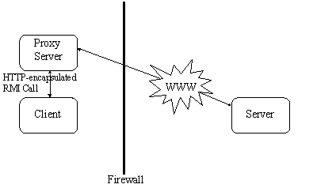
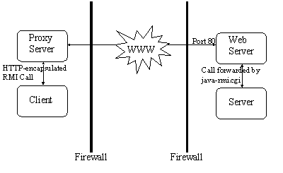

|
|
|
|
|
|
|
|
|
 |
|
|
|

|
|
This short course covers the fundamentals of the Remote Method Invocation (RMI) technology, as found in the Java 2™ platform. Course OutlineIntroduction to Distributed Computing with RMIRemote Method Invocation (RMI) technology, first introduced in JDKTM 1.1, elevates network programming to a higher plane. Although RMI is relatively easy to use, it is a remarkably powerful technology and exposes the average Java developer to an entirely new paradigm--the world of distributed object computing. This course provides you with an in-depth introduction to this versatile technology. RMI has evolved considerably since JDK 1.1, and has been significantly upgraded under the Java 2 SDK. Where applicable, the differences between the two releases will be indicated.
GoalsA primary goal for the RMI designers was to allow programmers to develop distributed Java programs with the same syntax and semantics used for non-distributed programs. To do this, they had to carefully map how Java classes and objects work in a single JavaTM Virtual Machine1 (JVM) to a new model of how classes and objects would work in a distributed (multiple JVM) computing environment.This section introduces the RMI architecture from the perspective of the distributed or remote Java objects, and explores their differences through the behavior of local Java objects. The RMI architecture defines how objects behave, how and when exceptions can occur, how memory is managed, and how parameters are passed to, and returned from, remote methods.
Comparison of Distributed and Nondistributed Java ProgramsThe RMI architects tried to make the use of distributed Java objects similar to using local Java objects. While they succeeded, some important differences are listed in the table below. Do not worry if you do not understand all of the difference. They will become clear as you explore the RMI architecture. You can use this table as a reference as you learn about RMI.
Java RMI Architecture
The design goal for the RMI architecture was to create a Java distributed object model that integrates naturally into the Java programming language and the local object model. RMI architects have succeeded; creating a system that extends the safety and robustness of the Java architecture to the distributed computing world. Interfaces: The Heart of RMI
The RMI architecture is based on one important principle: the definition of behavior and the implementation of that behavior are separate concepts. RMI allows the code that defines the behavior and the code that implements the behavior to remain separate and to run on separate JVMs. This fits nicely with the needs of a distributed system where clients are concerned about the definition of a service and servers are focused on providing the service. Specifically, in RMI, the definition of a remote service is coded using a Java interface. The implementation of the remote service is coded in a class. Therefore, the key to understanding RMI is to remember that interfaces define behavior and classes define implementation. While the following diagram illustrates this separation,  remember that a Java interface does not contain executable code. RMI supports two classes that implement the same interface. The first class is the implementation of the behavior, and it runs on the server. The second class acts as a proxy for the remote service and it runs on the client. This is shown in the following diagram.  A client program makes method calls on the proxy object, RMI sends the request to the remote JVM, and forwards it to the implementation. Any return values provided by the implementation are sent back to the proxy and then to the client's program.
RMI Architecture LayersWith an understanding of the high-level RMI architecture, take a look under the covers to see its implementation. The RMI implementation is essentially built from three abstraction layers. The first is the Stub and Skeleton layer, which lies just beneath the view of the developer. This layer intercepts method calls made by the client to the interface reference variable and redirects these calls to a remote RMI service. The next layer is the Remote Reference Layer. This layer understands how to interpret and manage references made from clients to the remote service objects. In JDK 1.1, this layer connects clients to remote service objects that are running and exported on a server. The connection is a one-to-one (unicast) link. In the Java 2 SDK, this layer was enhanced to support the activation of dormant remote service objects via Remote Object Activation. The transport layer is based on TCP/IP connections between machines in a network. It provides basic connectivity, as well as some firewall penetration strategies.  By using a layered architecture each of the layers could be enhanced or replaced without affecting the rest of the system. For example, the transport layer could be replaced by a UDP/IP layer without affecting the upper layers.
Stub and Skeleton LayerThe stub and skeleton layer of RMI lie just beneath the view of the Java developer. In this layer, RMI uses the Proxy design pattern as described in the book, Design Patterns by Gamma, Helm, Johnson and Vlissides. In the Proxy pattern, an object in one context is represented by another (the proxy) in a separate context. The proxy knows how to forward method calls between the participating objects. The following class diagram illustrates the Proxy pattern. 
In RMI's use of the Proxy pattern,
the stub class plays the role of the proxy, and the
remote service implementation class
plays the role of the A skeleton is a helper class that is generated for RMI to use. The skeleton understands how to communicate with the stub across the RMI link. The skeleton carries on a conversation with the stub; it reads the parameters for the method call from the link, makes the call to the remote service implementation object, accepts the return value, and then writes the return value back to the stub. In the Java 2 SDK implementation of RMI, the new wire protocol has made skeleton classes obsolete. RMI uses reflection to make the connection to the remote service object. You only have to worry about skeleton classes and objects in JDK 1.1 and JDK 1.1 compatible system implementations. Remote Reference Layer
The Remote Reference Layers defines and supports
the invocation semantics of the RMI
connection.
This layer provides a
The stub objects use the The JDK 1.1 implementation of RMI provides only one way for clients to connect to remote service implementations: a unicast, point-to-point connection. Before a client can use a remote service, the remote service must be instantiated on the server and exported to the RMI system. (If it is the primary service, it must also be named and registered in the RMI Registry). The Java 2 SDK implementation of RMI adds a new semantic for the client-server connection. In this version, RMI supports activatable remote objects. When a method call is made to the proxy for an activatable object, RMI determines if the remote service implementation object is dormant. If it is dormant, RMI will instantiate the object and restore its state from a disk file. Once an activatable object is in memory, it behaves just like JDK 1.1 remote service implementation objects. Other types of connection semantics are possible. For example, with multicast, a single proxy could send a method request to multiple implementations simultaneously and accept the first reply (this improves response time and possibly improves availability). In the future, Sun may add additional invocation semantics to RMI.
Transport LayerThe Transport Layer makes the connection between JVMs. All connections are stream-based network connections that use TCP/IP. Even if two JVMs are running on the same physical computer, they connect through their host computer's TCP/IP network protocol stack. (This is why you must have an operational TCP/IP configuration on your computer to run the Exercises in this course). The following diagram shows the unfettered use of TCP/IP connections between JVMs. 
As you know, TCP/IP provides a persistent, stream-based connection
between two machines based on an IP address and port number
at each end.
Usually a DNS name is used instead of an IP address; this
means you could talk about a TCP/IP connection between
On top of TCP/IP, RMI uses a wire level protocol
called Java Remote Method Protocol (JRMP).
JRMP is a proprietary, stream-based protocol that is
only partially
Sun and IBM have jointly worked on the next version of RMI, called RMI-IIOP, which will be available with Java 2 SDK Version 1.3. The interesting thing about RMI-IIOP is that instead of using JRMP, it will use the Object Management Group (OMG) Internet Inter-ORB Protocol, IIOP, to communicate between clients and servers. The OMG is a group of more than 800 members that defines a vendor-neutral, distributed object architecture called Common Object Request Broker Architecture (CORBA). CORBA Object Request Broker (ORB) clients and servers communicate with each other using IIOP. With the adoption of the Objects-by-Value extension to CORBA and the Java Language to IDL Mapping proposal, the ground work was set for direct RMI to CORBA integration. This new RMI-IIOP implementation supports most of the RMI feature set, except for:
The RMI transport layer is designed to make a connection between clients and server, even in the face of networking obstacles. While the transport layer prefers to use multiple TCP/IP connections, some network configurations only allow a single TCP/IP connection between a client and server (some browsers restrict applets to a single network connection back to their hosting server). In this case, the transport layer multiplexes multiple virtual connections within a single TCP/IP connection. Naming Remote ObjectsDuring the presentation of the RMI Architecture, one question has been repeatedly postponed: "How does a client find an RMI remote service? " Now you'll find the answer to that question. Clients find remote services by using a naming or directory service. This may seem like circular logic. How can a client locate a service by using a service? In fact, that is exactly the case. A naming or directory service is run on a well-known host and port number. (Well-known meaning everyone in an organization knowing what it is).
RMI can use many different directory services, including
the Java Naming and Directory Interface (JNDI).
RMI itself includes a simple service called the RMI Registry,
On a host machine, a server program creates a remote service by first creating a local object that implements that service. Next, it exports that object to RMI. When the object is exported, RMI creates a listening service that waits for clients to connect and request the service. After exporting, the server registers the object in the RMI Registry under a public name.
On the client side, the RMI Registry is accessed through
the static class
rmi://<host_name>
[:<name_service_port>]
/<service_name>
where the
Using RMIIt is now time to build a working RMI system and get hands-on experience. In this section, you will build a simple remote calculator service and use it from a client program. A working RMI system is composed of several parts.
To simplify things, you will use a single directory for the client and server code. By running the client and the server out of the same directory, you will not have to set up an HTTP or FTP server to provide the class files. (Details about how to use HTTP and FTP servers as class file providers will be covered in the section on Distributing and Installing RMI Software) Assuming that the RMI system is already designed, you take the following steps to build a system:
That's it; you have created a working RMI system. Even though you ran the three consoles on the same computer, RMI uses your network stack and TCP/IP to communicate between the three separate JVMs. This is a full-fledged RMI system.
ExerciseParameters in RMIYou have seen that RMI supports method calls to remote objects. When these calls involve passing parameters or accepting a return value, how does RMI transfer these between JVMs? What semantics are used? Does RMI support pass-by-value or pass-by-reference? The answer depends on whether the parameters are primitive data types, objects, or remote objects. Parameters in a Single JVMFirst, review how parameters are passed in a single JVM. The normal semantics for Java technology is pass-by-value. When a parameter is passed to a method, the JVM makes a copy of the value, places the copy on the stack and then executes the method. When the code inside a method uses a parameter, it accesses its stack and uses the copy of the parameter. Values returned from methods are also copies.
When a primitive data type
( String s = "Test"; System.out.println(s);
in the mechanics it is the reference variable that is
passed to the method.
In the example, a copy of reference
variable Now you will see how RMI passes parameters and return values between remote JVMs. Primitive ParametersWhen a primitive data type is passed as a parameter to a remote method, the RMI system passes it by value. RMI will make a copy of a primitive data type and send it to the remote method. If a method returns a primitive data type, it is also returned to the calling JVM by value. Values are passed between JVMs in a standard, machine-independent format. This allows JVMs running on different platforms to communicate with each other reliably.
Object ParametersWhen an object is passed to a remote method, the semantics change from the case of the single JVM. RMI sends the object itself, not its reference, between JVMs. It is the object that is passed by value, not the reference to the object. Similarly, when a remote method returns an object, a copy of the whole object is returned to the calling program. Unlike primitive data types, sending an object to a remote JVM is a nontrivial task. A Java object can be simple and self-contained, or it could refer to other Java objects in complex graph-like structure. Because different JVMs do not share heap memory, RMI must send the referenced object and all objects it references. (Passing large object graphs can use a lot of CPU time and network bandwidth.) RMI uses a technology called Object Serialization to transform an object into a linear format that can then be sent over the network wire. Object serialization essentially flattens an object and any objects it references. Serialized objects can be de-serialized in the memory of the remote JVM and made ready for use by a Java program. Remote Object Parameters
RMI introduces a third type of parameter to consider: remote objects.
As you have
seen,
a client program can obtain a reference to a
remote object through the RMI Registry program.
There is another way in which a client can obtain a remote reference,
it can be returned to the client from a method call.
In the following code, the
BankManager bm;
Account a;
try {
bm = (BankManager) Naming.lookup(
"rmi://BankServer
/BankManagerService"
);
a = bm.getAccount( "jGuru" );
// Code that uses the account
}
catch (RemoteException re) {
}
In the implementation of
public Account
getAccount(String accountName) {
// Code to find the matching account
AccountImpl ai =
// return reference from search
return AccountImpl;
}
When a method returns a local reference to an exported remote object, RMI does not return that object. Instead, it substitutes another object (the remote proxy for that service) in the return stream. The following diagram illustrates how RMI method calls might be used to:

Notice that when the It is particularly interesting to note that when the reference is returned to Server, it is not converted into a local reference to the implementation object. While this would result in a speed improvement, maintaining this indirection ensures that the semantics of using a remote reference is maintained.
ExerciseRMI Client-side CallbacksIn many architectures, a server may need to make a remote call to a client. Examples include progress feedback, time tick notifications, warnings of problems, etc. To accomplish this, a client must also act as an RMI server.
There is nothing really special about this as RMI works equally well between all
computers. However, it may be impractical for a client to extend UnicastRemoteObject.exportObject (<remote_object>) ExerciseDistributing and Installing RMI SoftwareRMI adds support for a Distributed Class model to the Java platform and extends Java technology's reach to multiple JVMs. It should not be a surprise that installing an RMI system is more involved than setting up a Java runtime on a single computer. In this section, you will learn about the issues related to installing and distributing an RMI based system. For the purposes of this section, it is assumed that the overall process of designing a DC system has led you to the point where you must consider the allocation of processing to nodes. And you are trying to determine how to install the system onto each node.
Distributing RMI ClassesTo run an RMI application, the supporting class files must be placed in locations that can be found by the server and the clients. For the server, the following classes must be available to its class loader:
For the client, the following classes must be available to its class loader:
Once you know which files must be on the different nodes, it is a simple task to make sure they are available to each JVM's class loader. Automatic Distribution of ClassesThe RMI designers extended the concept of class loading to include the loading of classes from FTP servers and HTTP servers. This is a powerful extension as it means that classes can be deployed in one, or only a few places, and all nodes in a RMI system will be able to get the proper class files to operate.
RMI supports this remote class loading through the
The way RMI loads classes is controlled by a number of properties. These properties can be set when each JVM is run: java [ -D<PropertyName>=<PropertyValue> ]+ <ClassFile>
The property
Note: RMI does not send class files along with the serialized objects. If the remote JVM needs to load a class file for an object, it looks for the embedded URL and contacts the server at that location for the file.
When the property
By using different combinations of the available system properties, a number of different RMI system configurations can be created.
Closed.
All classes used by clients and the server must be
located on the JVM and referenced by the
Server based.
A client applet is loaded from the
server's
Client dynamic.
The primary classes are loaded by referencing the
Server-dynamic.
The primary classes are loaded by referencing the Bootstrap client. In this configuration, all of the client code is loaded from an HTTP or FTP server across the network. The only code residing on the client machine is a small bootstrap loader. Bootstrap server. In this configuration, all of the server code is loaded from an HTTP or FTP server located on the network. The only code residing on the server machine is a small bootstrap loader. The exercise for this section involves creating a bootstrap client configuration. Please follow the directions carefully as different files need to be placed and compiled within separate directories.
ExerciseFirewall IssuesFirewalls are inevitably encountered by any networked enterprise application that has to operate beyond the sheltering confines of an Intranet. Typically, firewalls block all network traffic, with the exception of those intended for certain "well-known" ports. Since the RMI transport layer opens dynamic socket connections between the client and the server to facilitate communication, the JRMP traffic is typically blocked by most firewall implementations. But luckily, the RMI designers had anticipated this problem, and a solution is provided by the RMI transport layer itself. To get across firewalls, RMI makes use of HTTP tunneling by encapsulating the RMI calls within an HTTP POST request. Now, examine how HTTP tunneling of RMI traffic works by taking a closer look at the possible scenarios: the RMI client, the server, or both can be operating from behind a firewall. The following diagram shows the scenario where an RMI client located behind a firewall communicates with an external server.  In the above scenario, when the transport layer tries to establish a connection with the server, it is blocked by the firewall. When this happens, the RMI transport layer automatically retries by encapsulating the JRMP call data within an HTTP POST request. The HTTP POST header for the call is in the form: http://hostname:port
If a client is behind a firewall, it is important that you also
set the system property The following diagram shows the scenario when both the RMI client and server are behind firewalls, or when the client proxy server can forward data only to the well-known HTTP port 80 at the server.  In this case, the RMI transport layer uses one additional level of indirection! This is because the client can no longer send the HTTP-encapsulated JRMP calls to arbitrary ports as the server is also behind a firewall. Instead, the RMI transport layer places JRMP call inside the HTTP packets and send those packets to port 80 of the server. The HTTP POST header is now in the form http://hostname:80/cgi-bin/java-rmi?forward=<port>
This causes the execution of the CGI script,
Of course, for this to work, the java.rmi.server.hostname=host.domain.com Note: Rather than making use of CGI script for the call forwarding, it is more efficient to use a servlet implementation of the same. You should be able to obtain the servlet's source code from Sun's RMI FAQ.
It should be noted that notwithstanding the built-in mechanism for
overcoming firewalls, RMI suffers a significant performance
degradation imposed by HTTP tunneling.
There are other disadvantages to using HTTP tunneling too. For instance,
your RMI application will no longer be able to multiplex JRMP calls
on a single connection, since it would now follow a discrete request/response
protocol. Additionally, using the
java.rmi.server.disableHttp=true
Distributed Garbage Collection
One of the joys of programming for the Java platform is not worrying about memory allocation. The JVM has an automatic garbage collector that will reclaim the memory from any object that has been discarded by the running program. One of the design objectives for RMI was seamless integration into the Java programming language, which includes garbage collection. Designing an efficient single-machine garbage collector is hard; designing a distributed garbage collector is very hard. The RMI system provides a reference counting distributed garbage collection algorithm based on Modula-3's Network Objects. This system works by having the server keep track of which clients have requested access to remote objects running on the server. When a reference is made, the server marks the object as "dirty" and when a client drops the reference, it is marked as being "clean." The interface to the DGC (distributed garbage collector) is hidden in
the stubs and skeletons layer. However, a remote object can implement the
In addition to the reference counting
mechanism, a live client reference has a lease with a specified time. If a
client does not refresh the connection to the remote object before the lease
term expires, the reference is considered to be dead and the remote object may
be garbage collected. The lease time is controlled by the system property
Because of these garbage collection semantics, a client must be prepared to deal with remote objects that have "disappeared." In the following exercise, you will have the opportunity to experiment with the distributed garbage collector. Exercise
Serializing Remote ObjectsWhen designing a system using RMI, there are times when you would like to have the flexibility to control where a remote object runs. Today, when a remote object is brought to life on a particular JVM, it will remain on that JVM. You cannot "send" the remote object to another machine for execution at a new location. RMI makes it difficult to have the option of running a service locally or remotely. The very reason RMI makes it easy to build some
distributed application can make it difficult to move objects between JVMs.
When you declare that an object implements the There are two different ways to solve this problem.
The first involves manually serializing the remote object and sending it to the
other JVM. To do this, there are two strategies. The first strategy is to
create an In a second strategy, you can use a delegation pattern. In this pattern, you place the core functionality into a class that:
Then you build a remote interface that declares remote access to the functionality. When you create an implementation of the remote interface, instead of reimplementing the functionality, you allow the remote implementation to defer, or delegate, to an instance of the local version. Now look at the building blocks of this pattern. Note that this is a very simple example. A real-world example would have a significant number of local fields and methods.
// Place functionality in a local object
public class LocalModel
implements java.io.Serializable
{
public String getVersionNumber()
{
return "Version 1.0";
}
}
Next, you declare an
interface RemoteModelRef
extends java.rmi.Remote
{
String getVersionNumber()
throws java.rmi.RemoteException;
}
The implementation of the remote service accepts a reference to the
public class RemoteModelImpl
extends
java.rmi.server.UnicastRemoteObject
implements RemoteModelRef
{
LocalModel lm;
public RemoteModelImpl (LocalModel lm)
throws java.rmi.RemoteException
{
super();
this.lm = lm;
}
// Delegate to the local
//model implementation
public String getVersionNumber()
throws java.rmi.RemoteException
{
return lm.getVersionNumber();
}
}
Finally, you define a remote service that provides access to clients. This
is done with a
interface RemoteModelMgr extends java.rmi.Remote
{
RemoteModelRef getRemoteModelRef()
throws java.rmi.RemoteException;
LocalModel getLocalModel()
throws java.rmi.RemoteException;
}
public class RemoteModelMgrImpl
extends
java.rmi.server.UnicastRemoteObject
implements RemoteModelMgr
{
LocalModel lm;
RemoteModelImpl rmImpl;
public RemoteModelMgrImpl()
throws java.rmi.RemoteException
{
super();
}
public RemoteModelRef getRemoteModelRef()
throws java.rmi.RemoteException
{
// Lazy instantiation of delgatee
if (null == lm)
{
lm = new LocalModel();
}
// Lazy instantiation of
//Remote Interface Wrapper
if (null == rmImpl)
{
rmImpl = new RemoteModelImpl (lm);
}
return ((RemoteModelRef) rmImpl);
}
public LocalModel getLocalModel()
throws java.rmi.RemoteException
{
// Return a reference to the
//same LocalModel
// that exists as the delagetee
//of the RMI remote
// object wrapper
// Lazy instantiation of delgatee
if (null == lm)
{
lm = new LocalModel();
}
return lm;
}
}
ExercisesMobile Agent ArchitecturesThe solution to the mobile computing agent using RMI is, at best, a work-around. Other distributed Java architectures have been designed to address this issue and others. These are collectively called mobile agent architectures. Some examples are IBM's Aglets Architecture and ObjectSpace's Voyager System. These systems are specifically designed to allow and support the movement of Java objects between JVMs, carrying their data along with their execution instructions. Alternate ImplementationsThis module has covered the RMI architecture and Sun's implementation. There are other implementations available, including:
Additional ResourcesBooks and Articles
Copyright 1996-2000 jGuru.com. All Rights Reserved.
Back to Top
_______ |